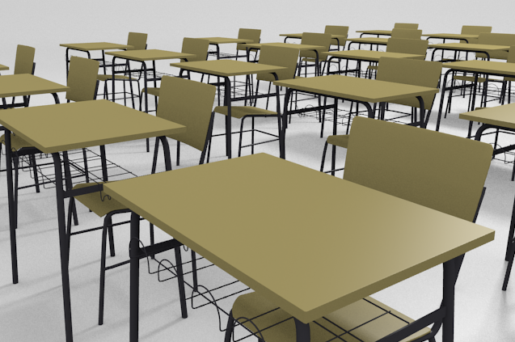

Objetos vinculados

Editar un objeto y que se transformen todos los duplicados es una de las funcionalidades que más tiempo nos ahorran. Por el simple hecho de duplicar un objeto ("Shift-D") hay muchos datos que quedan vinculados entre el original y su clon. El caso más significativo lo encontramos en el material. Si el original tenía asignado un material, este es heredado por el duplicado de tal manera que la alteración del color de uno tiene su inmediata consecuencia en el otro. Pero una duplicación ("Shift_D") no implica que si giramos o escalamos el original, esto ocurra en el duplicado.
Este apartado lo dedicarmos a objetos que se transforman de forma clónica.